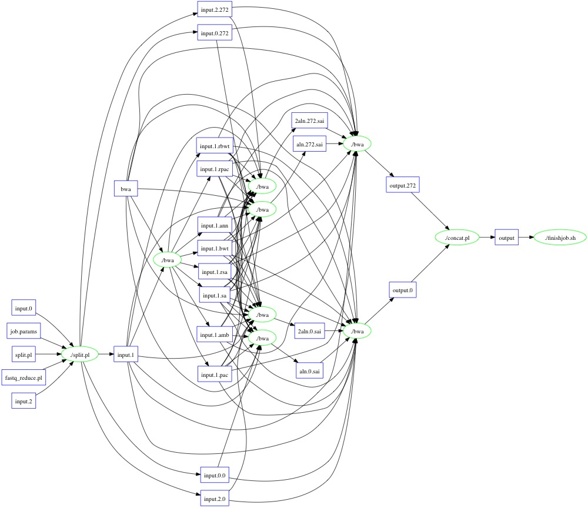
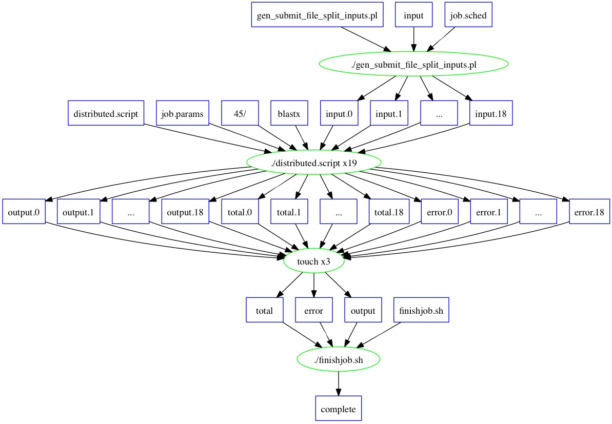
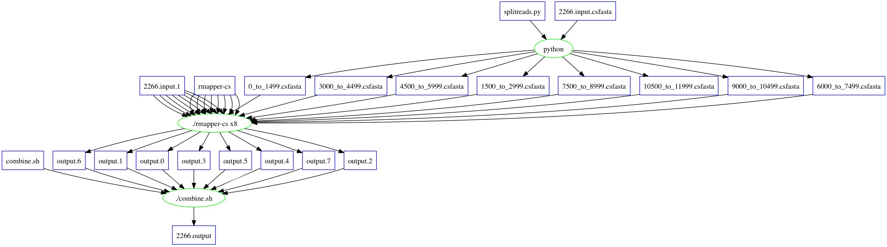

Makeflow Menagerie
BWA Workflow

Usage
- Copy workflow archive (
/afs/crc.nd.edu/group/ccl/data/workflows/archives/bwa.tar.gz)
- Extract (
tar -xzf bwa.tar.gz)
- Run with
makeflow (makeflow [opts] Makeflow)
Info
- Collectd from Biocompute (Job 3948)
- Basic Statistics
- Input size:
6.5 GB
- Time (100 wq workers):
27 min
- 274 splits generated
- Description of files
bwa - binary containing algorithm for comparisonconcat.pl - combine resultsfastq_reduce.pl - split input filesfinishjob.sh - clean up temporary filesinput.0 - database for comparisoninput.1 - sequences to testinput.2 - database for comparisonjob.params - variables used by workersjob.sched - variables for condor submissionMakeflow - makefile describing the workflowsplit.pl - wrapper script to split input.0 and input.1
- More Details
Blast Workflow

Usage
- Copy workflow archive (
/afs/crc.nd.edu/group/ccl/data/workflows/archives/blast.tar.gz)
- Extract (
tar -xzf blast.tar.gz)
- Run with
makeflow (makeflow [opts] Makeflow)
Info
- Collected from Biocompute (Job 3909)
- Basic Statistics
- Input size:
8.4 GB
- Output size:
5.0 MB
- Time (10 wq workers):
~3.5 hrs
- 19 splits generated
- Description of files
blast_database - reference sequence databaseblastx - binary file containing algorithm for comparisondistributed.script - setup environment and run blastfinishjob.sh - clean up temporary filesgen_submit_file_split_inputs.pl - split input data based on job.params and create condor submission fileinput - sequences to compare with sequence databasejob.params - variables used by workersjob.sched - variables for condor submissionlegacy_blast.pl - script provided by NCBI to translate parameters between versions of blastMakeflow - makefile describing the workflow
- More Details
Shrimp Workflow

Usage
- Copy workflow archive (
/afs/crc.nd.edu/group/ccl/data/workflows/archives/shrimp_mod.tar.gz)
- Extract (
tar -xzf shrimp_mod.tar.gz)
- Run with
makeflow (makeflow [opts] Makeflow)
Info
- Collected from Biocompute (Job 2266)
- Basic Statistics
- Input Size:
675 MB
- 5081 Rules
- Time (200 wq workers):
3 hours
- More Details